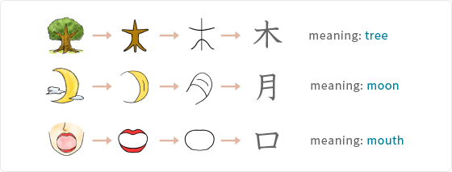

Kanji, one brushstroke at a time
Every kanji began as a little drawing of the world. A tree grew into 木, a crescent moon into 月, an open mouth into 口. Learn the picture hidden in each character and the strokes will stay with you.
Pick a kanji below, then watch it drawn stroke by stroke on the practice page.
